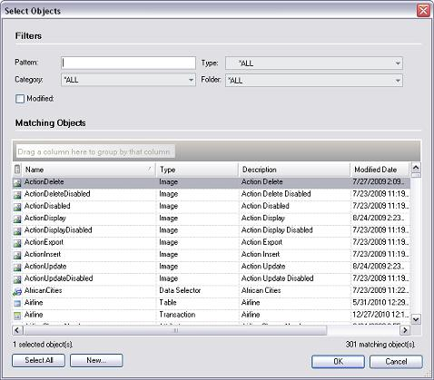

Used to indicate the object(s) you wish to work with (open, select to specify, etc.). Each displayed object appears displaying its Name, type, description and modified date. It also allows modifying the window’s size, allowing us to see the full objects’ description. Once it is modified it keeps these dimensions until it is modified again.  Selection CriteriaThe Selection Criteria is used to limit the search for a particular object.
If you were to simultaneously indicate pattern, type and folder, then you will be displayed all objects that conform the indicated pattern, match the entered type and belong to the selected folder. Matching ObjectsDisplays the objects matching the selection criteria. You could see the name, the type the description and the last modified date of the objects. Once all objects matching the selection criteria have been displayed you can select the ones you want to work with (or all of them by clicking the Select All button). If the object is not listed, you may want to create it; for this press New button to access the window object creation.
|